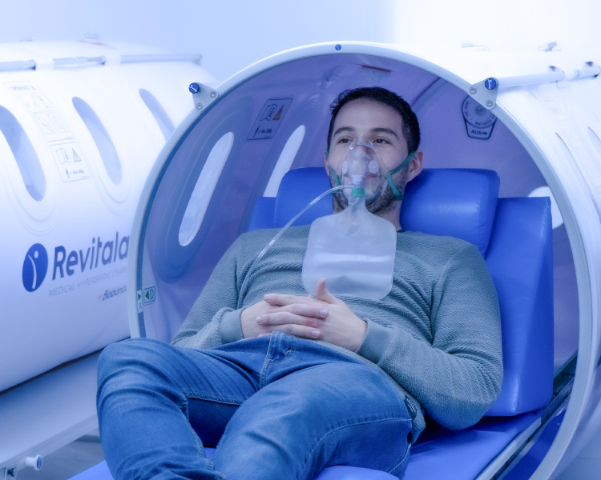

Cómo nos podés contactar
Encontrá varias formas de comunicarte con nosotros.
Estamos para ayudarte
Elegí el canal que te resulte más cómodo. Te respondemos en el día.
Agendá tu turno
Reservá tu sesión en el piso hiperbárico del Instituto de la Visión con atención permanente y personalizada.
Solicitar turno
Preguntas frecuentes
Se pueden sacar turnos ya sea comunicándote telefónicamente al (011) 6091-2900 de lunes a viernes de 9:00 a 18:00 hs, por WhatsApp al 11-5572-2763, o rellenando el formulario en la sección.
Sacar TurnoTrabajamos con más de 40 obras sociales y prepagas. Podés ver el listado completo en la sección de coberturas.
Coberturas MédicasPara tu atención, presentá tu DNI, la credencial vigente de tu obra social o prepaga y, si tu cobertura lo requiere, la orden o derivación médica correspondiente.